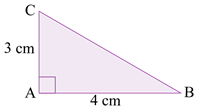
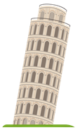
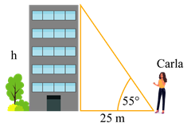
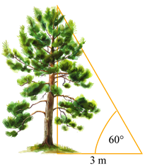

1.
Resuelve el siguiente triángulo rectángulo.
h = m
β ≈ °
x ≈ m
2.
Resuelve el siguiente triángulo rectángulo.
h ≈ cm
β ≈ °
α ≈ °
3.
Determina el valor de los ángulos internos del triángulo rectángulo, tomando en cuenta que las
rectas r y t son paralelas.
β ≈ °
α ≈ °
4.
Resuelve el triángulo rectángulo, tomando en cuenta que las rectas r y t son paralelas.
β ≈ °
α ≈ °
b ≈ cm
h ≈ cm
5.
Si el valor de encierra el gráfico del triángulo
rectángulo correspondiente.
6.
Determina el valor de x e y en los siguientes triángulos rectángulos.
7.
Halla las razones trigonométricas seno, coseno y tangente para los ángulos B y C del triángulo.


8.
La icónica Torre de Pisa tiene una altura de 55,86 metros de alto respecto a la vertical, mientras que la
altura real de la torre es de 56,71 metros desde su base hasta la punta. ¿Cúal sería su ángulo de
inclinación respecto a la horizontal?

El ángulo de inclinación es de: °
El ángulo de inclinación es de: °
9.
Carla se sitúa en un punto de referencia a 25 m de un edificio. Si el ángulo de elevación al punto más
alto del edificio es de 55°, ¿cuál es la altura del edificio?

La altura del edificio es de: m.
La altura del edificio es de: m.
10.
Si estás en el puente peatonal, observando al pato. Descubre el ángulo de elevación desde
el pato hacia ti.

La altura del árbol es de: m.
La altura del árbol es de: m.

En parejas. Construyan los siguientes triángulos rectángulos,
mide los ángulos internos y comprueba su ángulo de inclinación aplicando lo aprendido.